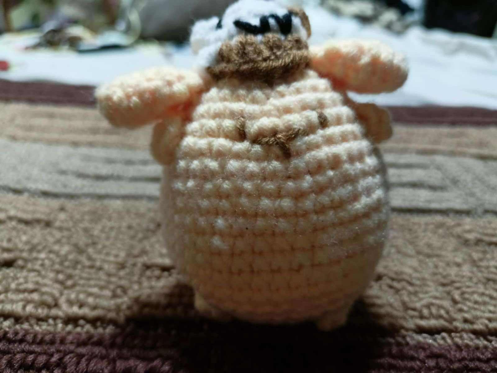
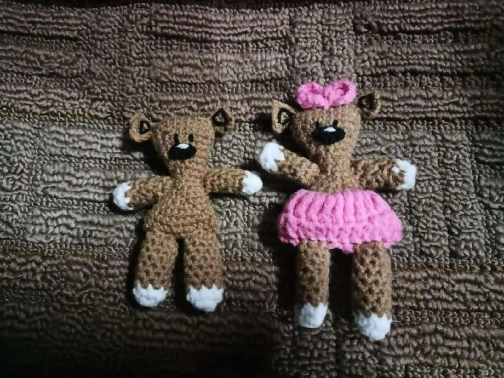

What is our product?

Our products are handmade crochet, It's a unique craft that can be used to make a lot of items like keychains, beanie, small plushies, etc.

The main focus of our product is gift ideas, particularly for important occasions or holidays. To show that our crocheted goods are thoughtful, unique presents for birthdays, holidays, and other occasions.